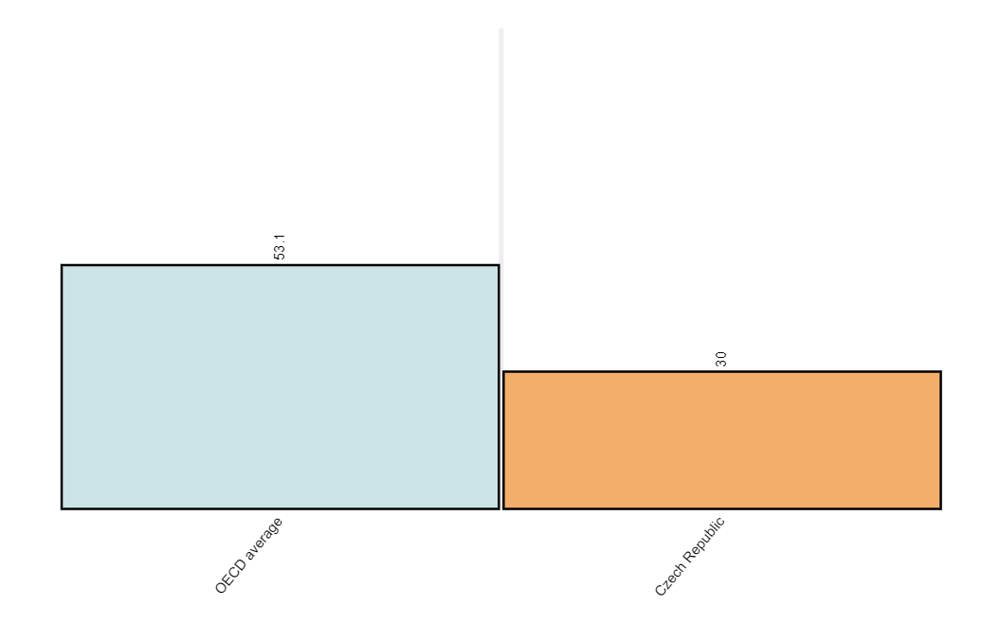
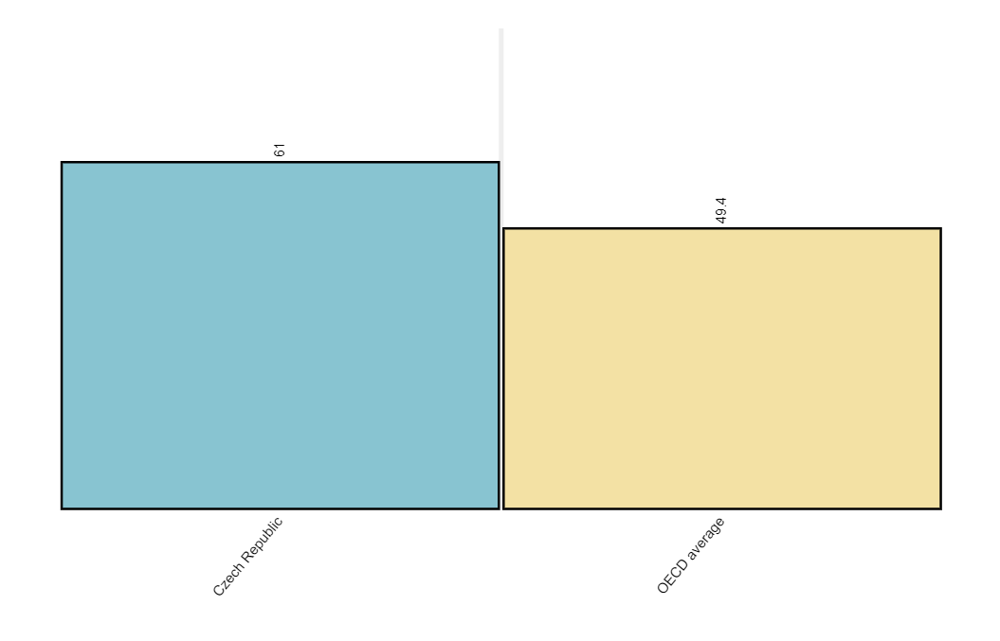

WELCOME
This website will explore the background of Education within the
Czech Republic, its teaching environment and the struggles teachers
face, as well as various policy measures that the Czech Republic is
taking to remedy these issues.
To navigate the website, either scroll down or click the links on
the navigation bar above.

BACKGROUND
Czechia, or the Czech Republic, is a country in Central Europe that
has a very rich educational history. The Czech Republic recognized the
importance of education and instituted educational policies as early
as 1774 when they mandated school attendance. This has resulted in
Czechia having a great modern day literacy rate of over 99%. For
comparison, 79% of adults are literate in the United States.
As of today, the Czechian Government guarantees that all children will
have access to at least one year of preschool, as well as nine years
of elementary education from grades 1-9, split into five years of
primary education and four years of secondary education. After that,
children can choose to go into specialized vocational education or
general secondary education, and then test into university through a
"Maturita Exam".
Czechia has great benefits for students such as free state-provided
health care and free tuition at many native universities, although
ones that teach in foreign languages may not be free.
General Information:
Capital: Prague
Government Type: Unitary Parliamentary Republic
Population: 10.51 million (2021)
Official Language: Czech
THE PROBLEM IN TEACHING
While the overall educational conditions are good for students in the
Czech Republic and the Czech Republic puts a lot of focus on
education, teachers are not viewed in a highly reputable manner and
are not treated as well, which has resulted in disparities within how
teachers are treated in Czechia as opposed to in other similar Europen
countries.
According to the Global Teacher Status Index 2018, the Czech Republic
has the sixth lowest teacher appreciation rating out of polled
countries.
Only 53% of secondary teachers in the Czech Republic believe
that the advantages of teaching outweigh the disadvantages, which is
the lowest
rate out of all OECD countries. This is likely for many of the reasons
listed below:
1. BENEFITS
Teachers are being paid below the OECD average for salary.
2. SCHOOL ENVIRONMENT
36% of secondary schools reported student aggression against teachers,
and teachers in Czechia feel less prepared for classroom management
than teachers in the average OECD country.
Percentage of Teachers that Felt Prepared for Classroom Management

3. ADDITIONAL RESPONSIBILITIES
Teachers reported that external administrative responsibilities are a
significant source of stress.
Percentage of Teachers who Report Too Much Administrative Work is a source of stress
POLICIES
Through recent years, the Czech Republic has recognized many of these issues for teachers and has started to implement policies to try to alleviate teacher stress and improve compensation.
Specific Policy Reference:
The Long-term Plan for Education and the Development of the Education System
of the Czech Republic (2019-2023) within the Government Resolution No. 489
was approved in July 2019.
The key strategic goals are to:
- increasing financial means for teachers
- revise curriculum and support innovated education frameworks
- improve management of schools and school facilities through cooperation between levels of governance
Results of Policy:
Since 2020, the Czech government has made increasing teacher salaries
a priority within its main Education Strategy, and has already implemented a
policy to increase teacher salaries by 15%. There are also additional policies
implemented to support teacher interactions with students by adding more
protections and training teachers in the cases of students aggression,
Additionally, the government is continuing to push for even more changes.
According to the Czech government's policy statement, the government has commited to:
- Maintaining teacher salaries at 130% of the average gross monthly salary.
- Improving the conditions of teaching by increasing professional support
- Reform teacher training with more emphasis on practical skills
- Make teaching positions more accessible by 2024
- Strengthening the roles of school principals
- Renovate and construct new education infastructure
Policy Analysis:
These policies, if implemented successfully in a manner that will reach the goals listed, are a great first step towards addressing the issues listed above.
- Increasing the roles of principals and administrative staff within schools should reduce the stress teachers face from administrative work.
- Increasing teacher salaries and guaranteeing a baseline minimum pay relative to average salaries will improve teachers' perceptions of their value within society and will also hopefully add security to their lives and improve their living conditions.
- Reforming teaching positions with more emphasis on practical skills should prepare teachers with more skills to deal with aggressive students who are unwilling to listen.
Often times, policies implemented to help teachers are not broad enough to reach many groups of teachers who may need it most. Student teachers and teaching assistants are often some groups that are neglected, making much less salary than established teachers. The unsustainability of being a student teacher can be a significant barrier for people who wish to become teachers and for people who wish to get more experience teaching in a guided setting. Implementing a bill like California's AB-238 would enable student teachers in Czechia to be supported more by grants on top of whatever salary they are potentially paid, which would hopefully make becoming a teacher more accessible to all.
Not only would this help the student teachers themselves, but this would also improve the overall pool of teachers in the Czech Republic. If we provide more support for those who may wish to become teachers, but haven't considered it a feasible career because of the low initial pay, then we can improve where the system is bottlenecked and hopefully improve the entire teaching pool, which will then have a positive impact on students and their learning.
REFERENCES
Czech republic icons created by Freepik - Flaticon
https://nces.ed.gov/surveys/talis/talis2013/talis2013results_6.asp
https://gpseducation.oecd.org/IndicatorExplorer
https://www.oecd-ilibrary.org/the-teaching-workforce-in-the-czech-republic_5jlpq7jq5n45.pdf
https://www.oecd.org/education/policy-outlook/country-profile-Czech-Republic-2020.pdf
https://www.msmt.cz/uploads/odbor_12/28805/Vyhlaseni_rozvojoveho_programu.pdf
https://www.varkeyfoundation.org/what-we-do/research/global-teacher-status-index-2018
https://vlada.gov.cz/en/jednani-vlady/policy-statement/policy-statement-of-the-government-193762/#education_and_sport
https://eurydice.eacea.ec.europa.eu/national-education-systems/czechia/fundamental-principles-and-national-policies